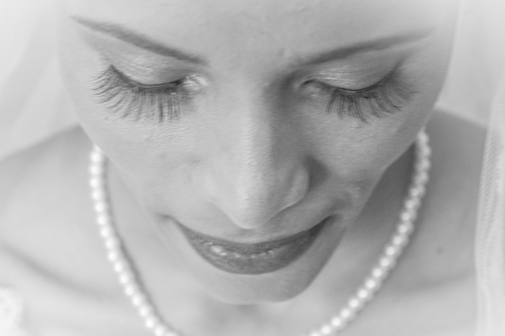

May 2021
TAURUS. Show the world your star power, Taurus. It's birthday season! The most fortunate new moon of the year arrives for you on the 11th—the only one in your zodiac sign in 2021.
TAURUS. Show the world your star power, Taurus. It's birthday season! The most fortunate new moon of the year arrives for you on the 11th—the only one in your zodiac sign in 2021.
June kicks off with Gemini season in full swing, revitalizing our social lives and putting us in a chatty mood.
With Summer now in full swing and communication at full speed, July is a month that will light our inner fire, while also permitting us to rest and go within. We begin the second part of 2021 under the Sun in Cancer, the zodiac sign that is most connected to family, our roots, and our home.
A more positive energy arrives midmonth with the oh, so awaited entrance of Venus—the planet of love and pleasure—into Libra, one of the signs that it naturally rules. From August 16th to September 9th, we will welcome more balance, romance, and pleasure in our lives. These weeks are amazing for getting a makeover, getting creative, and inviting more magic into our lives.
For you, the Virgo energy is all about focusing on your money, honey! This is the time of the year to focus on creating a better budget for the year ahead, especially around the New Moon on September 6.
With twilight already setting in earlier, breezes going from brisk to truly chilling, leaves tumbling from trees in fiery hues, and neighborhoods aglow with jack o' lanterns and other spooky decor, it must be October, hosted by two signs that are equally committed to making autumn a memorable season in their own unique ways: social butterfly Libra and transformative Scorpio.